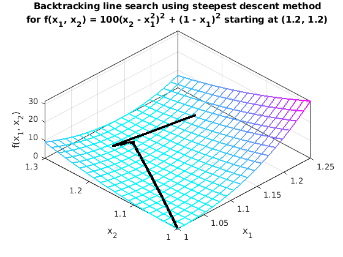
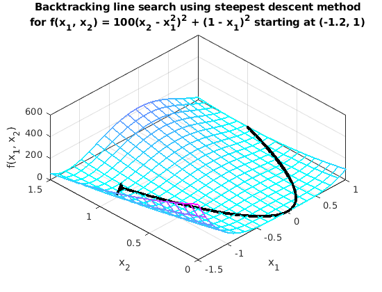
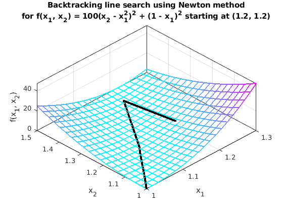
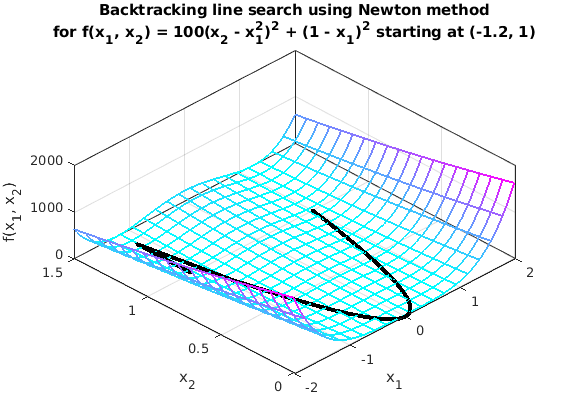

Contents
Homework Introduction
Establishing Parameters
clear
clc
alpha = 1.0;
rho = 0.5;
c = 1e-4;
tolerance = 10e-8;
param = [alpha, rho, c, tolerance];
p1 = [ 1.2; 1.2];
p2 = [-1.2; 1.0];
Setting Up Functions
x = sym('x', [2,1]);
f(x) = 100*(x(2) - x(1)^2)^2 + (1 - x(1))^2;
NE = "Newton";
SD = "steepest descent";
Iterating Methods and Printing Results:
SD_point1 = backtrack_line_search(SD, f, p1, param);
figure(1)
plot_search(SD_point1, SD, f, [1 1.25 1 1.3]);
SD_point2 = backtrack_line_search(SD, f, p2, param);
figure(2)
plot_search(SD_point2, SD, f, [-1.5 1 0 1.5]);
newton_point1 = backtrack_line_search(NE, f, p1, param);
figure(3)
plot_search(newton_point1, NE, f, [1 1.3 1 1.5]);
newton_point2 = backtrack_line_search(NE, f, p2, param);
figure(4)
plot_search(newton_point2, NE, f, [-2 2 0 1.5]);
8013 iterations using steepest descent method,
starting at point (1.2, 1.2):
Columns 1 through 3
'x_1' 'x_2' 'f(x_0)'
[1.200000000000000] [1.200000000000000] [ 5.800000000000000]
[1.084556380218966] [1.247935067037108] [ 0.520844867766157]
[1.112908489938083] [1.234792754665416] [ 0.014171542193907]
[1.111092579236144] [1.235511896924088] [ 0.012438618590703]
[1.111453064010314] [1.235182550136198] [ 0.012423898527980]
[1.110967259744601] [1.235231670340972] [ 0.012410443854420]
[1.111327595548179] [1.234902160572132] [ 0.012395990435597]
[1.110841835172505] [1.234951712933593] [ 0.012382370390347]
[1.111202102896445] [1.234622128731623] [ 0.012368097637211]
[1.110716376613773] [1.234672014174615] [ 0.012354380581293]
'...' '...' '...'
[1.000272818224001] [1.000529720003345] [1.000005898847002e-07]
[1.000258958836932] [1.000536103422000] [9.988836636352177e-08]
Columns 4 through 6
'p_k1' 'p_k2' 'alpha'
[-0.923548958248274] [ 0.383480536296861] [ 0.125000000000000]
[ 0.907267511011768] [-0.420553995894121] [ 0.031250000000000]
[-0.929746279393009] [ 0.368200836439648] [ 0.001953125000000]
[ 0.738272817500003] [-0.674502221597978] [4.882812500000000e-04]
[-0.994927136179316] [ 0.100598179377284] [4.882812500000000e-04]
[ 0.737967725727935] [-0.674836006585258] [4.882812500000000e-04]
[-0.994837249380811] [ 0.101483236272901] [4.882812500000000e-04]
[ 0.737828298629528] [-0.674988445635521] [4.882812500000000e-04]
[-0.994767426913563] [ 0.102165387249150] [4.882812500000000e-04]
[ 0.737795836220382] [-0.675023928506144] [4.882812500000000e-04]
'...' '...' '...'
[-0.908288790967811] [ 0.418343724946642] [1.525878906250000e-05]
[ NaN] [ NaN] [ NaN]
8776 iterations using steepest descent method,
starting at point (-1.2, 1):
Columns 1 through 3
'x_1' 'x_2' 'f(x_0)'
[-1.200000000000000] [ 1] [ 24.199999999999996]
[-0.968538089076200] [1.094474249356653] [ 6.321495316645386]
[-1.077967207963939] [1.034056802046682] [ 5.955234291215224]
[-1.020578428602165] [1.058811155267189] [ 4.112427323765299]
[-1.025701258230099] [1.052912700142907] [ 4.103537774540148]
[-1.017896971745113] [1.052554553929377] [ 4.098936564058503]
[-1.022808404700743] [1.046478948398044] [ 4.091765532760610]
[-1.014997101864393] [1.046342184920335] [ 4.086208653105395]
[-1.019802933358129] [1.040182709301111] [ 4.079607300509300]
[-1.011990772464195] [1.040109919073143] [ 4.073657597876354]
'...' '...' '...'
[ 0.999833847006819] [0.999632889526216] [1.489342960470657e-07]
[ 0.999820266622051] [0.999639846809682] [3.235574565310428e-08]
Columns 4 through 6
'p_k1' 'p_k2' 'alpha'
[ 0.925847643695199] [ 0.377896997426612] [ 0.250000000000000]
[-0.875432951101911] [-0.483339578479767] [ 0.125000000000000]
[ 0.918220469788388] [ 0.396069651528101] [ 0.062500000000000]
[-0.655722192375568] [-0.755002255908007] [ 0.007812500000000]
[ 0.998948670078197] [-0.045842715331890] [ 0.007812500000000]
[-0.628663418320567] [-0.777677508010551] [ 0.007812500000000]
[ 0.999846763052762] [-0.017505725146776] [ 0.007812500000000]
[-0.615146431198182] [-0.788412879260696] [ 0.007812500000000]
[ 0.999956594423558] [-0.009317149179921] [ 0.007812500000000]
[-0.607735484412824] [-0.794139522367141] [ 0.007812500000000]
'...' '...' '...'
[-0.890004096100181] [ 0.455952529244987] [1.525878906250000e-05]
[ NaN] [ NaN] [ NaN]
14 iterations using Newton method,
starting at point (1.2, 1.2):
Columns 1 through 3
'x_1' 'x_2' 'f(x_0)'
[1.200000000000000] [1.200000000000000] [ 5.800000000000000]
[1.195918367346939] [1.430204081632653] [ 0.038384034418534]
[1.098284494370630] [1.196688127560039] [ 0.018762343235565]
[1.081386326814726] [1.164340488247641] [ 0.009179946242836]
[1.061152849388324] [1.123108026369094] [ 0.004602469610835]
[1.041891729408251] [1.083698713368497] [ 0.002093352782430]
[1.026579669138199] [1.052711526677770] [8.397174465864355e-04]
[1.015782458019240] [1.031120277046601] [2.972114149467173e-04]
[1.008852698461973] [1.017388883139979] [9.396361167102329e-05]
[1.004750340388426] [1.009308975141881] [2.715695575364381e-05]
'...' '...' '...'
[1.000321342023033] [1.000628085439280] [1.248751865081991e-07]
[1.000161142059241] [1.000314933487477] [3.140818272013415e-08]
Columns 4 through 6
'p_k1' 'p_k2' 'alpha'
[ -0.004081632653061] [ 0.230204081632653] [ 1]
[ -0.195267745952617] [ -0.467031908145227] [0.500000000000000]
[ -0.033796335111809] [ -0.064695278624796] [0.500000000000000]
[ -0.040466954852803] [ -0.082464923757096] [0.500000000000000]
[ -0.038522239960146] [ -0.078818626001193] [0.500000000000000]
[ -0.030624120540105] [ -0.061974373381454] [0.500000000000000]
[ -0.021594422237916] [ -0.043182499262338] [0.500000000000000]
[ -0.013859519114534] [ -0.027462787813243] [0.500000000000000]
[ -0.008204716147095] [ -0.016159815996197] [0.500000000000000]
[ -0.004555133452465] [ -0.008939272404981] [0.500000000000000]
'...' '...' '...'
[-3.203999275827620e-04] [-6.263039036068313e-04] [0.500000000000000]
[ NaN] [ NaN] [ NaN]
115 iterations using Newton method,
starting at point (-1.2, 1):
Columns 1 through 3
'x_1' 'x_2' 'f(x_0)'
[-1.200000000000000] [ 1] [ 24.199999999999996]
[-1.175280898876405] [1.380674157303371] [ 4.731884325266608]
[-0.932981427619794] [0.811210655796923] [ 4.087398662072152]
[-0.914176259038676] [0.783526370798856] [ 3.936469794389347]
[-0.893257895403843] [0.751804210696937] [ 3.796996775067121]
[-0.870104082602084] [0.716202740634736] [ 3.664393425249008]
[-0.844627699033879] [0.676978326670232] [ 3.535275676761747]
[-0.816791907892380] [0.634508769138097] [ 3.407271439428506]
[-0.786624868822658] [0.589308413801200] [ 3.278878105929675]
[-0.754230561250740] [0.542027861718612] [ 3.149341295787916]
'...' '...' '...'
[ 0.999667603660405] [0.999328126705433] [1.156585223862693e-07]
[ 0.999709093531272] [0.999411977752842] [8.858793693185425e-08]
Columns 4 through 6
'p_k1' 'p_k2' 'alpha'
[ 0.024719101123595] [ 0.380674157303371] [ 1]
[ 1.938395770052881] [ -4.555708012051582] [0.125000000000000]
[ 0.150441348648949] [ -0.221474279984540] [0.125000000000000]
[ 0.167346909078666] [ -0.253777280815348] [0.125000000000000]
[ 0.185230502414071] [ -0.284811760497614] [0.125000000000000]
[ 0.203811068545639] [ -0.313795311716029] [0.125000000000000]
[ 0.222686329131994] [ -0.339756460257082] [0.125000000000000]
[ 0.241336312557772] [ -0.361602842695171] [0.125000000000000]
[ 0.259154460575344] [ -0.378244416660710] [0.125000000000000]
[ 0.275511574070746] [ -0.388762620478912] [0.125000000000000]
'...' '...' '...'
[3.319189669336502e-04] [6.708083792723814e-04] [0.125000000000000]
[ NaN] [ NaN] [ NaN]
   